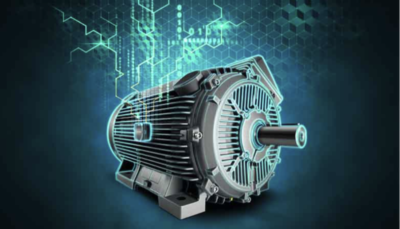
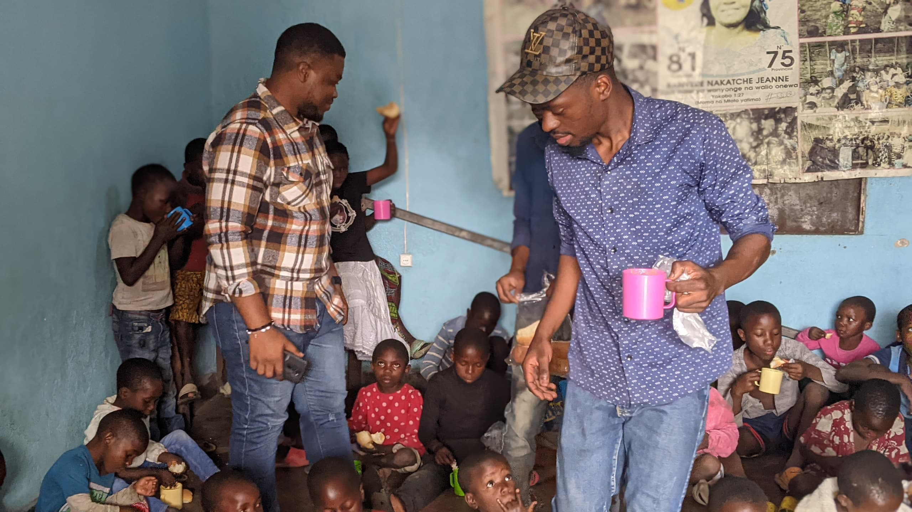
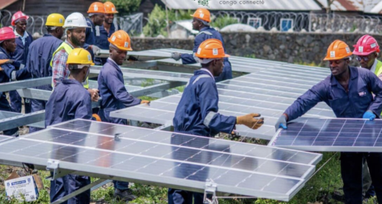

Conception d'un moteur
Apostolat Orphelinat
Installation de panneaux solaires

| Année | Stage et projets | Référence |
|---|---|---|
| 2020-2021 | Stage professionnel | Atelier d'électricité, ITIG Don Bosco, Goma |
| 2019-2023 | Installation électrique | Ménages privés |
| Du 16/10 au 23/10/2023 | Conception et réalisation d'un moteur à courant continu et d'une lampe | Projet tutoré ULPGL |
| 22 septembre 2024 | Apostolat dans un orphelinat | Orphelinat Maman Jeanne |
| 22 avril 2024 | Mise en place d'un système de protection contre la foudre | Riziki Bio Kivu |
| 2022 | Ajustage et couplage de panneaux solaires | Bbox |
|  |  |  |
Conception d'un moteur |
Apostolat Orphelinat |
Installation de panneaux solaires |
|
||
Mise à la terre |
||